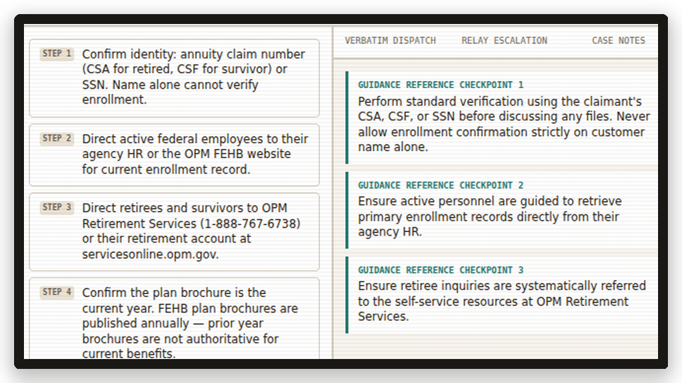

Performance support consoles that give frontline workers exactly what they need — in the exact moment the person in front of them needs it most.
We assess your role, your highest-stakes situations, your source material, and your volume. You leave with a scoped estimate and an honest fit answer.
Constructed from official job aids and verified source documents. Situation-first design, not information categories.
Delivered as a custom HTML console. No app download, no login wall, no learning curve.

The real Aidline console, mid-call. Every guide works this way — live during your discovery call, or in the Demo Center.
Each guide is custom-built for a specific role and industry. Situation-first design. Built from inside the role.
Live call support for benefits reps navigating verification, enrollment, claim status, and escalation under regulatory constraints.
Decision support for case managers handling live intake, eligibility, referrals, and crisis response.
Live-moment support for medical support staff navigating chart documentation and clinical workflow compliance.
Payment inquiries, loss mitigation, foreclosure status, escrow disputes, and complaint handling — built to FDCPA standards.
Live support for workforce specialists navigating job placement, eligibility, referrals, and barrier resolution.
Support for reentry specialists handling housing referrals, ID restoration, employment navigation, and crisis de-escalation.
Performance, leave, conduct, mental health, safety, and wage situations — with routing tiers on every card.
Investigations, termination review, accommodation escalation, sensitive conflict, and wage situations — with legal routing gates.
“This is the moment. You're in the moment. You can't miss the moment because you can never relive that moment. And that moment is like a crossroad. If you in it, you cross the road. If not, you may get stuck at the crossroad.”
A free public self-help navigation tool for anyone who doesn't know where to start — no account, no cost, no gatekeeping.